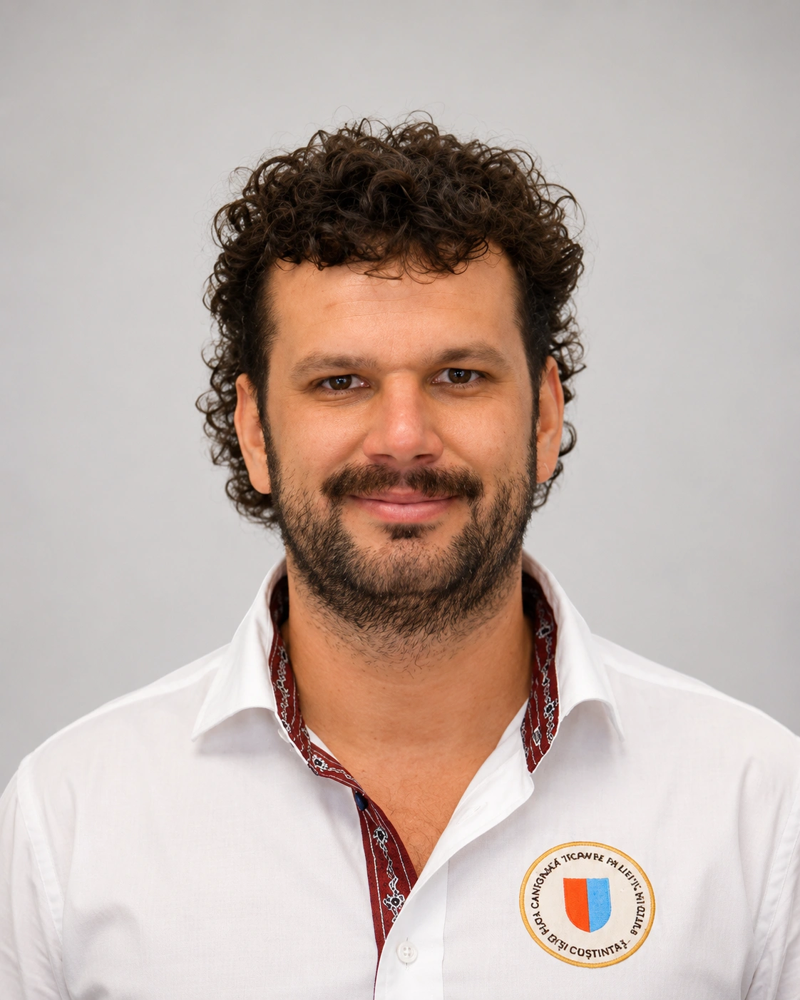
PresidenteASSOCIAZIONE TICINESE DI LOTTA SVIZZERA
Una tradizione
da vivere
insieme.
La segatura sotto i piedi.
Il rispetto in ogni stretta di mano.
La lotta svizzera, anche in Ticino.
RADICI SVIZZERE. CUORE TICINESE.DAL 2012
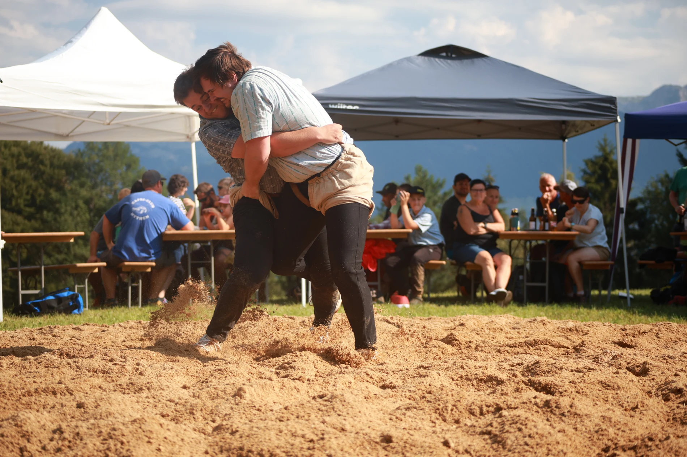
Entra nel cerchioAllenamenti gratuiti, dagli 8 anni↗Fai parte dell’ATLSDiventa membro da 20 CHF all’anno↗La lotta al tuo eventoUna tradizione da scoprire e provare↗
CHI SIAMO
Un’associazione.
Tante persone, una passione.
L’ATLS promuove e diffonde la lotta svizzera in Ticino. Accompagniamo giovani e attivi in uno sport di tecnica, coraggio e rispetto, mantenendo vive le tradizioni e il legame con il territorio.
Membri, volontari e partner rendono possibile questo percorso. Facciamo parte dell’ISV e della federazione nazionale ESV.
10 + 7Attivi e giovaniI nostri lottatori ↗6Membri di comitatoConosci il gruppo ↗251Membri passiviEntra a farne parte anche tu ↗1Membro d’onoreLe nostre radici ↗1Sponsor / partnerChi ci sostiene ↗
Membri passivi: assemblea 2025. Attivi e giovani: aggiornamento novembre 2026.

La nostra squadra
Giovani e attivi. Insieme.
10 attivi e 7 giovani, uniti dalla passione per la lotta svizzera.
UN PICCOLO GESTO, OGNI ANNO20 CHFA PARTIRE DA · ALL’ANNO
Entra a far parte anche tu.
Non serve lottare per essere dei nostri. Come membro passivo ricevi l’invito all’assemblea e rimani aggiornato sulla lotta svizzera. Il tuo contributo permette di praticare e diffondere questo sport in Ticino.
Diventa membroLE PERSONE DIETRO L’ASSOCIAZIONE
Il comitato
Volti, ruoli e contatti.
Siamo qui per darti una mano.
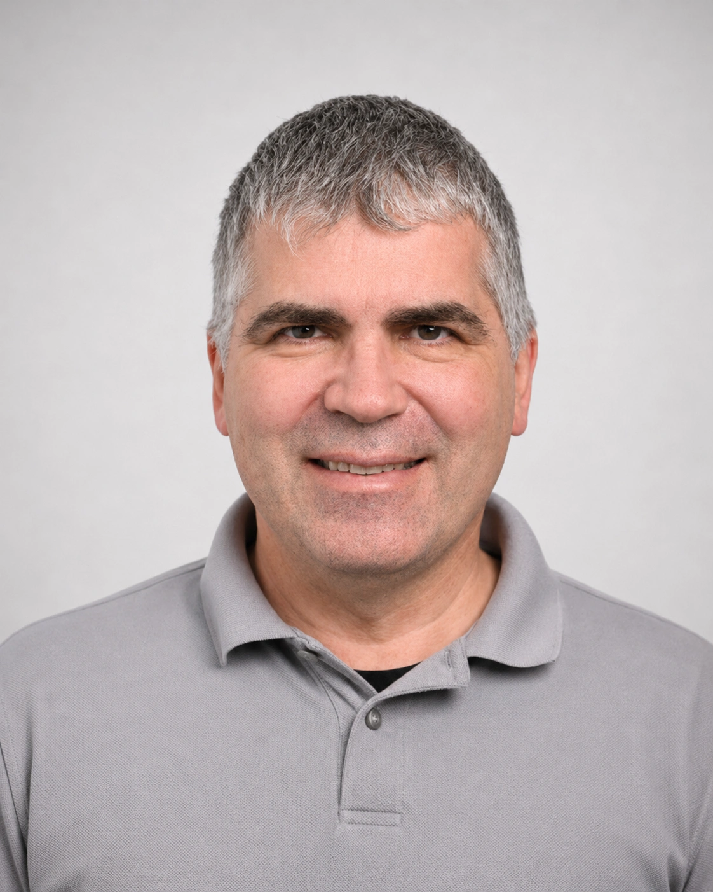
VicepresidentePaolo Donelli
Scrivi tramite ATLS ↗Ruth Crotta
crotta@bluewin.ch+41 79 696 91 79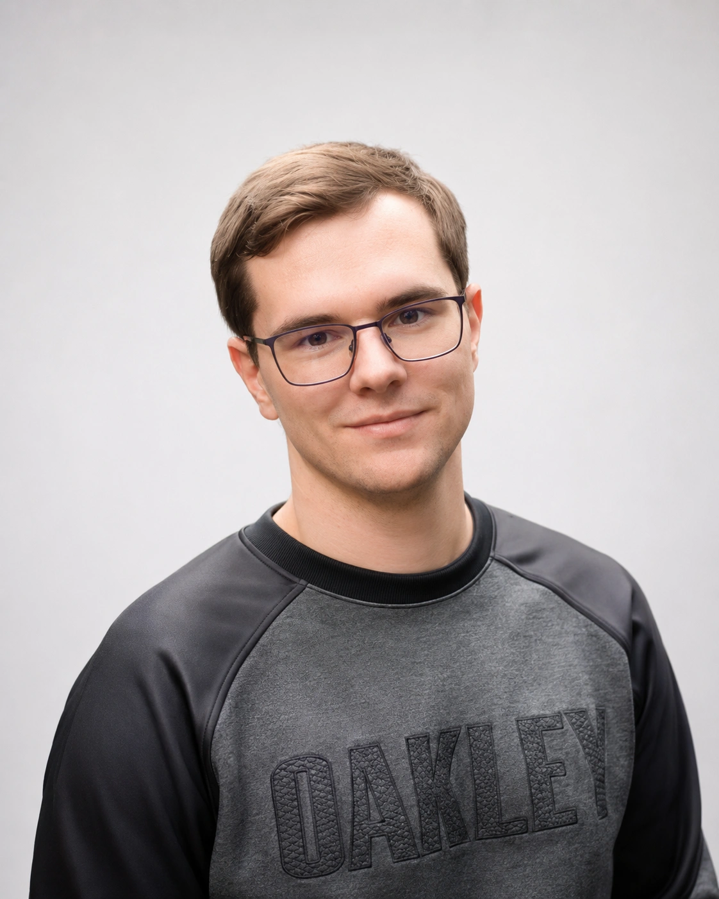
Responsabile tecnicoRobin Crotta
robcrotta@gmail.com+41 77 419 29 81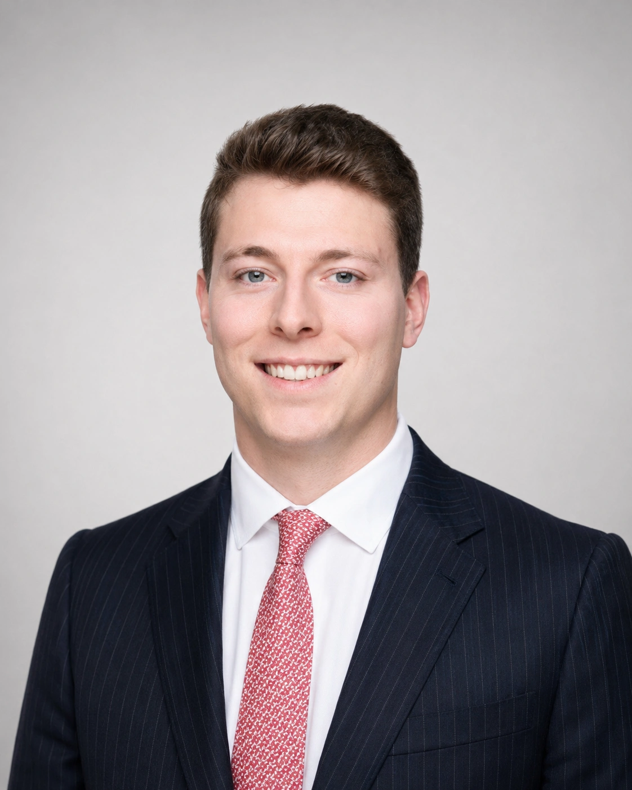
Membro di comitato · PortabandieraOscar Facchini
Scrivi tramite ATLS ↗Boris Baroni
sviluppo@lottasvizzera.ch+41 76 305 95 76MEMBRO D’ONORE
Edi Ritter · Primo presidente e tra i promotori della rinascita della lotta svizzera in Ticino.
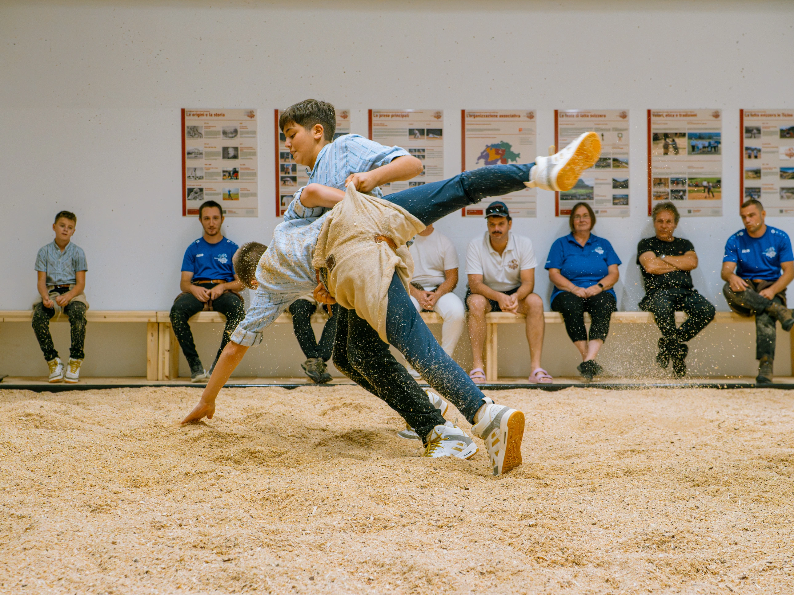
ALLENAMENTI
Il primo passo?
Vieni a provare.
Ti aspettiamo nella nostra palestra alla CMFG Arena di Sigirino. Impariamo le prese, alleniamo equilibrio, forza e coordinazione, e cresciamo insieme nel cerchio di segatura.
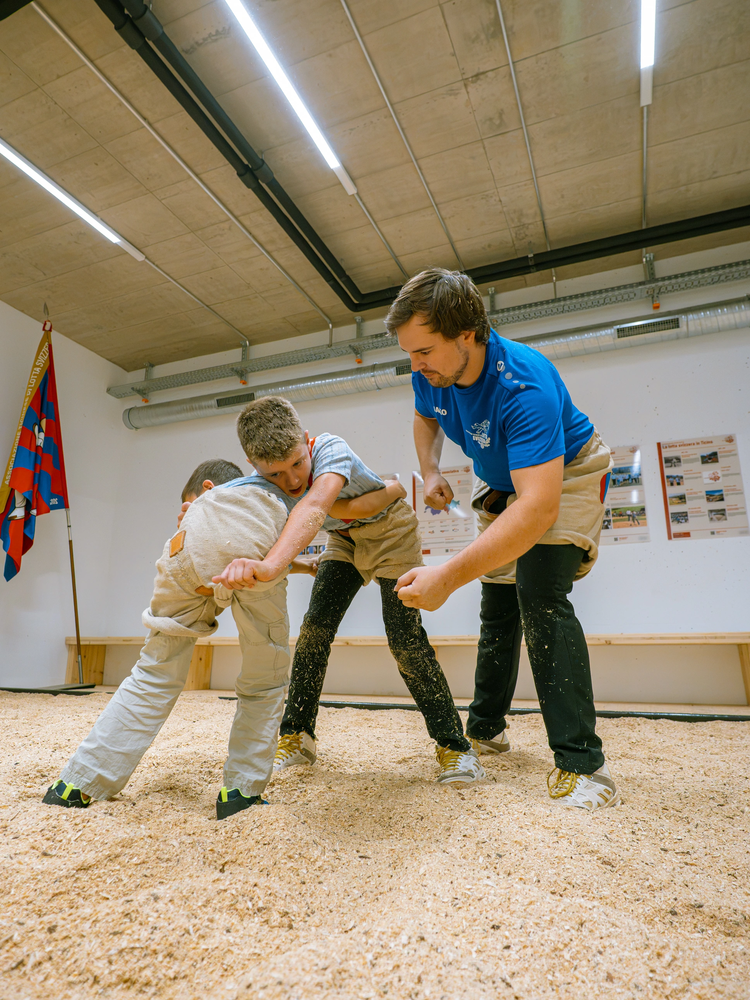
OGNI GIOVEDÌ
18:30 — 20:00
- Giovani
- 8–15 anni
- Attivi
- 16 anni e oltre
- Materiale
- Fornito dall’ATLS
- Partecipazione
- Gratuita
Per il lottatore la pratica è gratuita. Chiediamo, se possibile, che un parente o un amico sostenga l’associazione diventando membro passivo.
Scrivici per una prova Contatta il responsabile tecnico →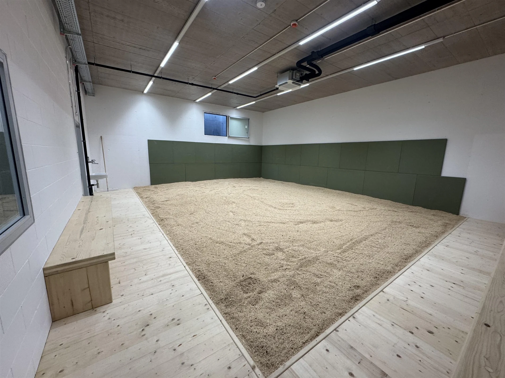
CMFG Arena
Via Ciossa 5
6806 Sigirino · Monteceneri
Dal parcheggio alla palestra
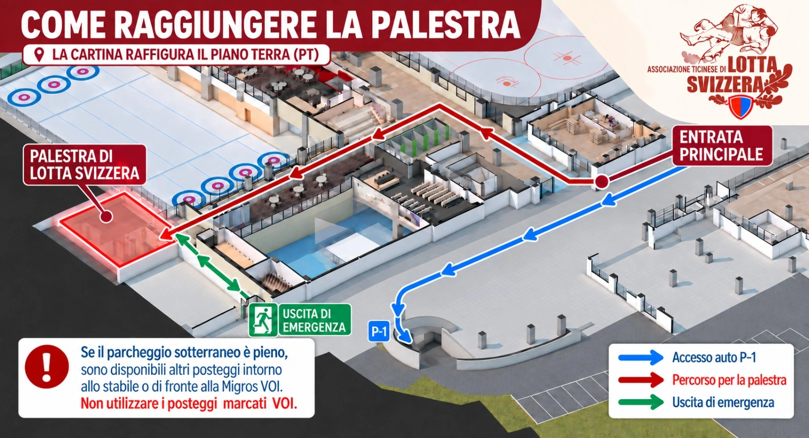
Se il parcheggio sotterraneo è pieno, usa gli altri posteggi attorno allo stabile o di fronte alla Migros VOI. Non utilizzare i posteggi marcati VOI.
LA NOSTRA STORIA
Radici lontane.
Una nuova casa.
Dai primi club ferroviari alla palestra di Sigirino: la lotta svizzera ha trovato in Ticino persone capaci di darle continuità.
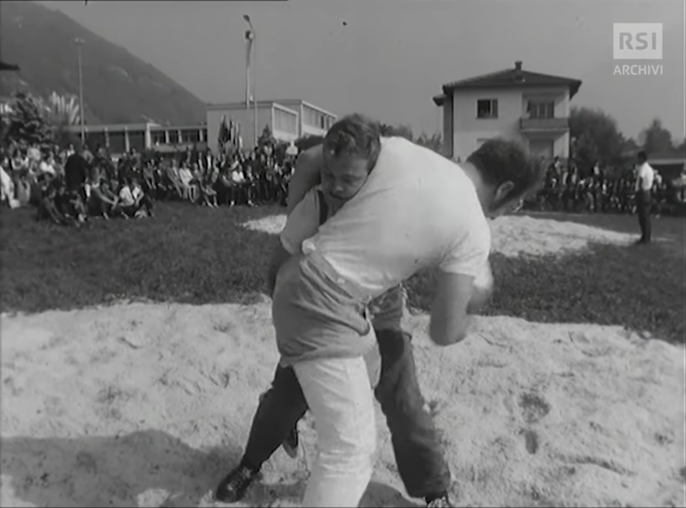
Le prime tracce in Ticino
Nel 1895 nasce un club a Bellinzona, seguito dall’esperienza di Airolo nel 1920. Le feste dimostrative di Bellinzona nel 1937 e Sementina nel 1971 mantengono viva la disciplina.
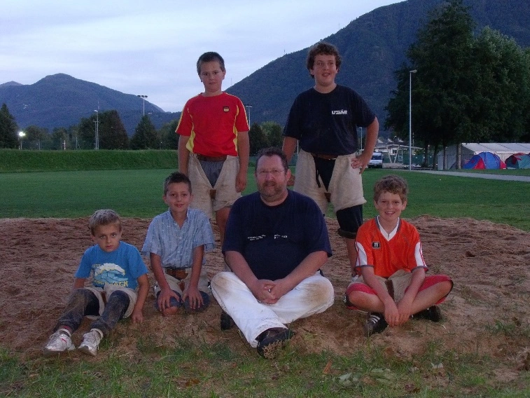
Si ricomincia a Tenero
Sportissima, Edi Ritter e lo Schwingklub Erstfeld riaccendono l’interesse. Il 21 settembre 2011 si tiene il primo allenamento ufficiale al CST Tenero.
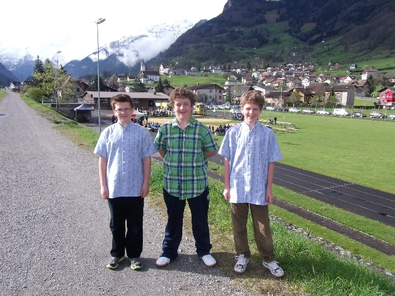
La prima gara, il primo rametto
Tre giovani ticinesi partecipano alla festa di Attinghausen. Robin Crotta conquista il primo Zweig del gruppo: inizia il percorso agonistico della futura associazione.
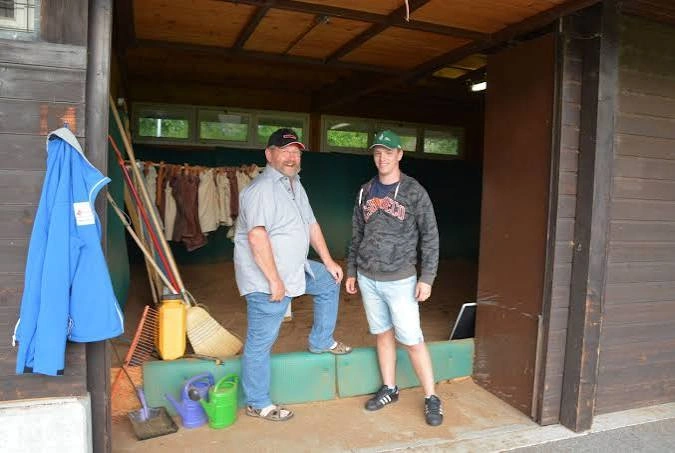
Nasce l’ATLS
L’assemblea costitutiva di Camorino dà al movimento una struttura stabile. Edi Ritter è il primo presidente; allenamenti, trasferte e formazione vengono coordinati come associazione.
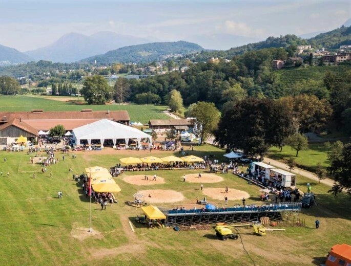
La lotta incontra il territorio
Dalle feste giovanili di Tenero e Lugano agli appuntamenti di Gudo, fino ai Giochi tradizionali svizzeri di Vezia. Nel 2019 l’ATLS entra nell’ISV e nella struttura ESV.
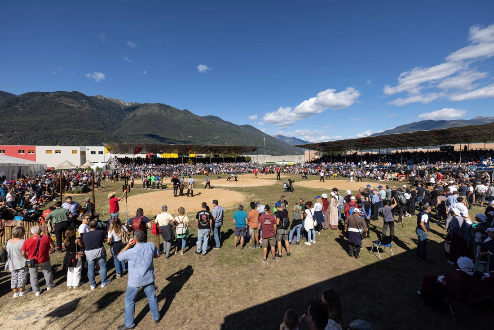
La prima Festa cantonale
Cadenazzo ospita la prima Festa cantonale ticinese con corona: circa 200 lottatori e 3’500 spettatori. Sven Schurtenberger vince l’incontro finale contro Dario Gwerder.
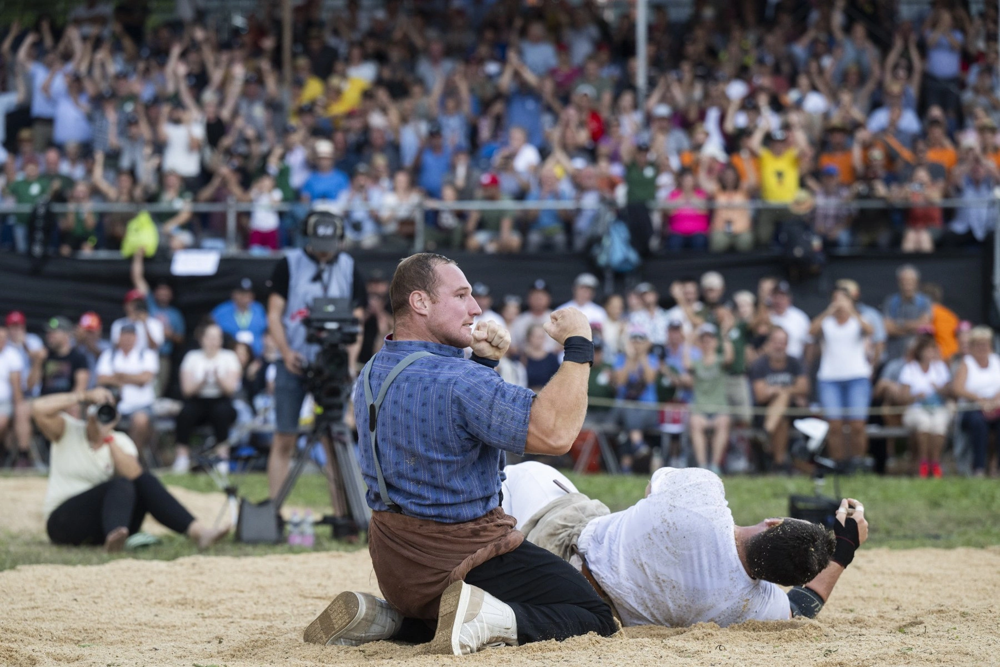
La seconda Festa cantonale
Biasca riunisce 206 lottatori e 4’990 spettatori e assegna 29 corone. Joel Wicki vince con 59.25 punti: la lotta svizzera conferma il proprio pubblico in Ticino.
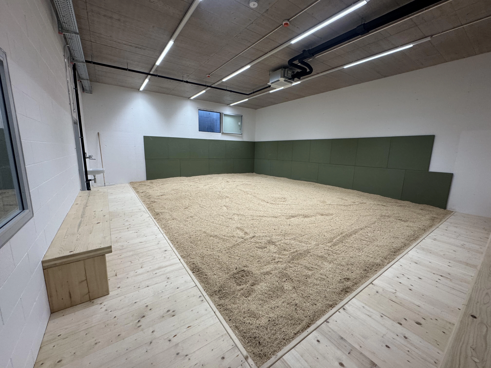
Una casa a Sigirino
Alla CMFG Arena apre la prima palestra ticinese interamente dedicata alla lotta svizzera. Uno spazio stabile per allenare giovani e attivi, tutto l’anno.
EVENTI
Portiamo la lotta
alla tua festa.
Una festa di paese, una fiera o una giornata dedicata allo sport: siamo aperti a partecipare agli eventi del territorio per mostrare e far provare la lotta svizzera.

Una tradizione da provare.
Disponiamo di un comodo tappetone gonfiabile per portare dimostrazioni e prove anche fuori dalla palestra. Raccontaci il tuo evento: valuteremo insieme disponibilità e organizzazione.
- Dimostrazioni di lotta svizzera
- Prove per conoscere lo sport
- Presenza a eventi paesani e fieristici
PARTNER
Il sostegno che
fa crescere lo sport.
I nostri partner sono parte della vita dell’associazione. Il loro contributo sostiene i giovani, l’attività sportiva e la diffusione della lotta svizzera in Ticino.
COSTRUIAMO QUALCOSA INSIEME
Diventa nostro partner.
Aiutaci a far crescere i giovani e a dare un futuro alla lotta svizzera in Ticino. Dalle attività in palestra alle gare e agli eventi, troviamo una collaborazione vicina alla tua realtà e ai valori del nostro sport.
Scopri le possibilità di collaborazione ↗DOCUMENTI
La vita dell’ATLS,
da consultare.
Formulari, rapporti e informazioni utili per seguire l’associazione.
Vuoi provare, sostenerci o organizzare un evento?
Scrivici: ti indirizziamo alla persona giusta.
Il comitato e tutti i contatti ↗Allenamenti · Robin Crotta ↗Iscrizioni · Ruth Crotta ↗Partner · Boris Baroni ↗
Seguici su Instagram ↗